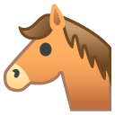
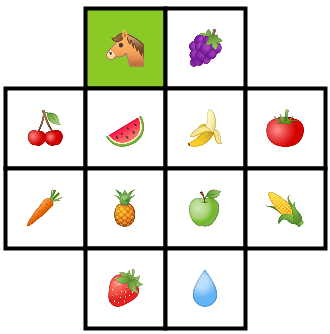
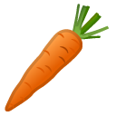
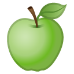
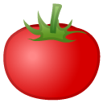
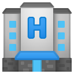
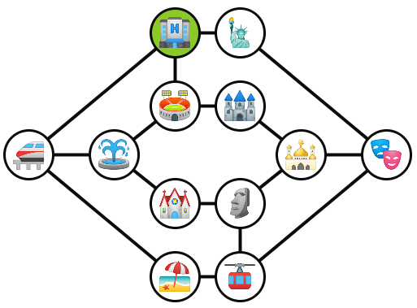
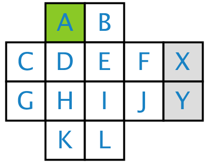
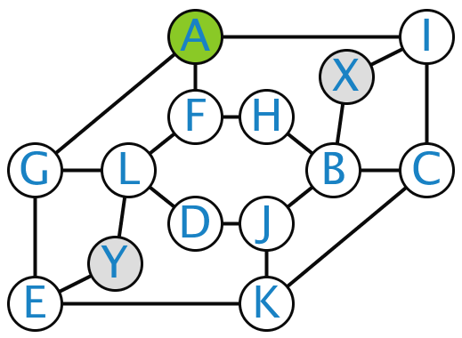

Gebaseerd op de Knight's Tour & Tour Guide les van het Co-De platform.
En die is gebaseerd op een les uit het boek 'The power of computational thinking?'.
Paardenronde
Stel je bent een paard uit het schaakspel en je staat in de stal ().
Je wilt nu graag in elk vakje exact één keer komen om er het eten op te eten.
Daarna wil je terug naar de stal ().
Het paard in een schaakspel beweegt steeds 1 vakje in één richting en 2 in een andere richting.

Vanuit de stal () kan je dus naar de volgende vakjes:  ,  & 
Opdracht: zoek een volgorde van vakjes.
Welke volgorde van vakjes kan je volgen?
https://bit.ly/3bIQQ60
Bespreking
Heb je een oplossing gevonden?
Denk je dat jouw oplossing de enige bestaande oplossing is?
Hoe heb je de oplossing gevonden?
Hoe moeilijk vond je deze opgave?
Op een schaal van 0 tot en met 10.
Stadsgids
Stel je bent een stadsgids en je wilt op één dag tijd een groep toeristen zoveel mogelijk van de stad laten zien.
Je staat aan het hotel () en hebt een dagticket gekocht voor de metro voor de toeristen.
Je wilt de stad als volgt bezoeken:
Opdracht: zoek een volgorde van bezienswaardigheden.
Welke volgorde van bezienswaardigheden zou jij volgen?
https://bit.ly/2ZUYch2
Bespreking
Heb je een oplossing gevonden?
Denk je dat jouw oplossing de enige bestaande oplossing is?
Hoe heb je de oplossing gevonden?
Hoe moeilijk vond je deze opgave?
Op een schaal van 0 tot en met 10.
Welke opdracht vond je het moeilijkste?
Beschrijf de verschillen tussen beide opgaves.
Beschrijf de gelijkenissen tussen beide opgaves.
Zijn beide opgaves wel zo verschillend?
Twee voorstellingen
Hoe vormen we het ene probleem om naar het andere?
Hoe kan een oplossing voor het ene probleem geïnterpreteerd worden als een oplossing voor het andere probleem?
Welke vierkanten komen overeen met welke monumenten?
Link met basiscompententies van CD
Welke basiscompetenties komen aan bod bij deze les?
Abstractie
Analyseren welk deel van de voorgestelde informatie van belang was.
Welke gegevens waren van belang?
Veralgemening
Veralgemening van het probleem
Andere bordlayout
Andere sprongen
Veralgemening van de oplossingsmethode
Het gebruik van grafen is een algemene methode
Waarvoor zou je dit nog kunnen gebruiken?
Decompositie in subproblemen
- Een grafe opstellen.
- Een (hamiltoniaans) pad zoeken in de grafe
- Het pad omvormen naar een reeks sprongen op het bord
Elk subprobleem kan onafhankelijk worden opgelost.
Algoritmisch denken
Niet echt veel gebruikt
Evaluatie
Geen focus hierop
Extra opdrachten
Hoe verandert de oplossingsmethode als we 2 vakjes toevoegen aan het veld?
 Hoe verandert de oplossingsmethode als het paard andere sprongen maakt?
Hoe verandert de oplossingsmethode als het paard verschillende soorten sprong kan maken?
Kan een paard alle vakjes van een schaakbord bereiken?
Kunnen jullie nog variaties bedenken?
Einde van de workshop
Bedankt voor het luisteren.
Zijn er nog vragen?
We vragen jullie nog om volgende zaken te doen:
- Vul nu volgende vragenlijst in:
- Leg nog een bebrastest af.
- Je krijgt hierover een mail.